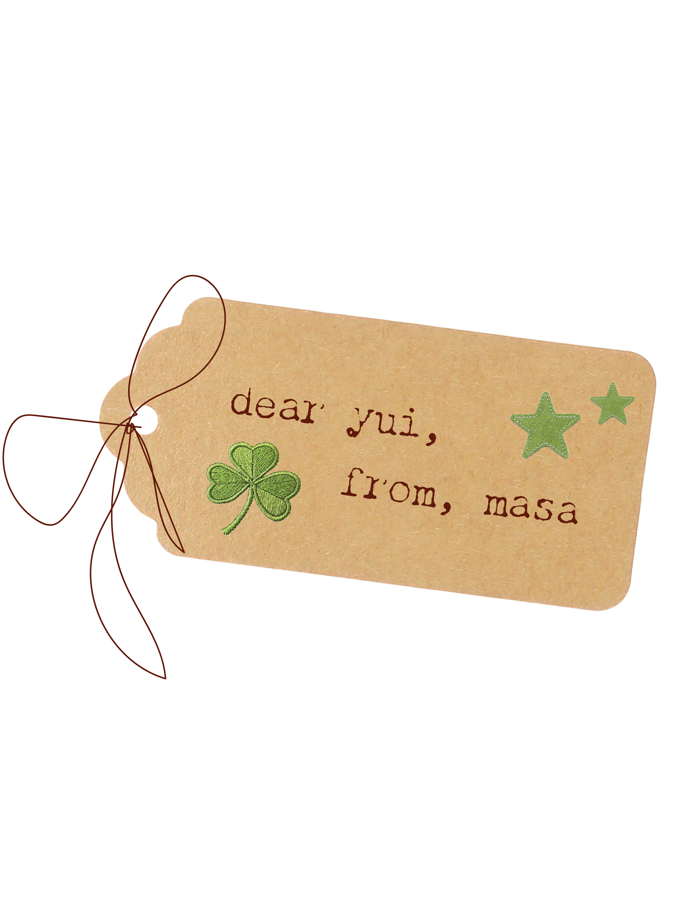
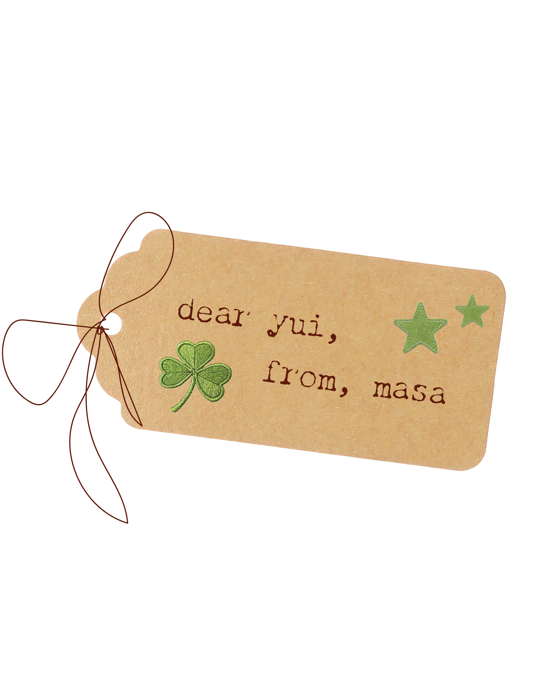

Letters From Who
From: dad ✿, To: yui ୭ৎ
 


The letter after my mothers, is my fathers. His handwriting is a bit more difficult to decifer as he uses more chinese characters "漢字" than my mother. But I can spot his handwriting from a mile away. My father rarely writes me letters but when he does, he writes them on the most wholesomely designed cards (and steals my calligraphy pens to write the headings.) While my memories with my mother are vacation trips to her hometown and all the outings we went together, my fondest memory with my father was our time spent together duing covid. My mother, who had to go to Hiroshima to take care of my grandparents during covid, left me and my father alone in the apartment for two months. However, my mother was our designated cook which meant either my father or I had to learn how to make meals. (It ended up being me.) My father became my assistant chef, taking me to small vegetable and fruit shops or bakeries around town that were unknown to the larger public. Every night I would dig through my moms old recipes and my father and I woukd attempt to recreate what she had always made us. The trips to get ingredients and the time I spent in the kitchen made me and my father closer, a moment in time I will always be grateful for.
母の手紙の次にあるのは父の手紙です。 父の字は母よりも漢字を多く使うので少し読みづらいけど、遠くからでもすぐに父の字だとわかります。 父はあまり手紙を書かないけど、書くときはいつも素敵なデザインのカードに書いてくれて、見出しを書くために私の書道ペンをこっそり使います。 母との思い出は、故郷に行った旅行や一緒に出かけたことが多いですが、父との一番の思い出はコロナの時期に過ごした時間です。 母が広島に祖父母の世話に行っている間、私と父は二人でアパートに二ヶ月ほどいました。 普段は母が料理をしていたので、誰かが作らなければいけなくて、結局私が担当することになりました。 父は私の助手のように、地元の小さな八百屋さんや果物屋さん、パン屋さんに連れて行ってくれました。 毎晩、母の古いレシピを見ながら、父と一緒に母の料理を再現しようとしました。 材料を買いに行く時間も、キッチンで過ごす時間も、父との距離が近くなった大切な思い出です。 あの時間には今でも感謝しています。
.png)